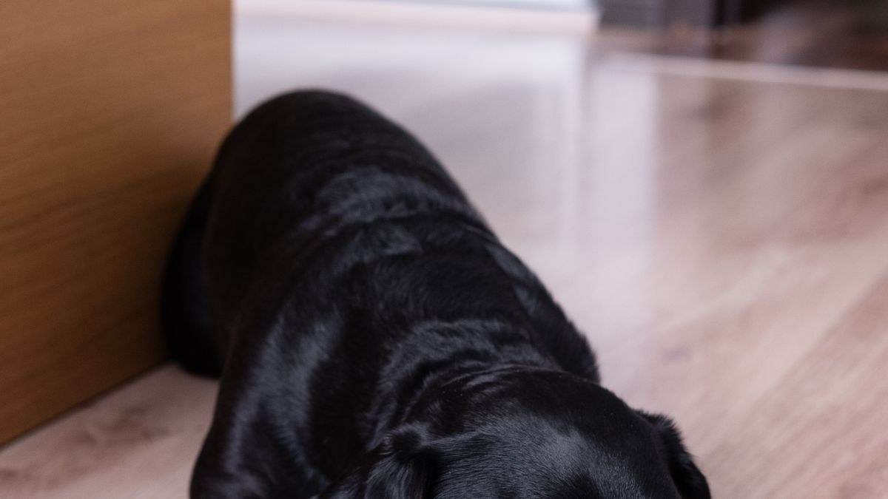

Chó hắt hơi sau khi tắm: nguyên nhân và cách xử lý an toàn
Trả lời nhanh: chó hắt hơi vài cái ngay sau khi tắm có thể là phản xạ đẩy nước, bụi, lông vụn hoặc mùi kích thích ra khỏi mũi. Tuy nhiên, nếu hắt hơi lặp lại nhiều, kéo dài, kèm dịch mũi đặc hoặc máu, sưng vùng mũi, bỏ ăn, lừ đừ, thở ồn hay khó thở thì không nên chỉ chờ tại nhà; hãy liên hệ bác sĩ thú y để tìm nguyên nhân.

Chó hắt hơi sau khi tắm có bình thường không?
Hắt hơi ngắn, thưa và tự hết có thể chỉ là phản xạ bảo vệ đường mũi. Chó cũng hắt hơi để đẩy chất kích thích ra khỏi mũi. Vì lúc tắm có nước, lông rụng, bụi trên mặt và mùi sản phẩm, thời điểm sau tắm có thể làm phản xạ này xuất hiện rõ hơn.
Điểm cần theo dõi không chỉ là “có hắt hơi hay không”, mà là tần suất, thời gian kéo dài và triệu chứng đi kèm. Một bé hắt hơi vài lần rồi ăn uống, chơi, thở bình thường khác hoàn toàn với bé hắt hơi liên tục, chảy dịch một bên mũi, có máu hoặc thở khó.
5 nguyên nhân có thể khiến chó hắt hơi sau khi tắm
1. Một ít nước hoặc bọt kích thích vùng mũi
Khi rửa vùng đầu, nước có thể bắn gần lỗ mũi. Phản xạ hắt hơi giúp cơ thể cố loại bỏ chất kích thích. Vì vậy không nên xịt tia nước trực tiếp vào mặt hoặc mũi chó.
2. Mùi sản phẩm grooming quá mạnh
Một số chó nhạy với mùi thơm, xịt dưỡng, nước hoa hoặc hóa chất trong môi trường. PetMD ghi nhận các chất kích thích và sản phẩm gia dụng có thể liên quan các cơn reverse sneezing ở một số chó. Sau tắm, nên ưu tiên khu vực thông thoáng và tránh xịt thêm sản phẩm gần mũi nếu chó đang khó chịu.
3. Lông vụn hoặc bụi quanh mặt bị khuấy lên
Tắm, sấy và chải có thể làm lông vụn di chuyển quanh vùng mõm. Nếu một hạt nhỏ hoặc dị vật lọt vào mũi, chó có thể hắt hơi lặp lại để cố đẩy ra. Không dùng tăm bông hoặc nhíp đưa sâu vào lỗ mũi để tự lấy dị vật.
4. Dị ứng hoặc viêm mũi xảy ra cùng thời điểm
Hắt hơi không chỉ xảy ra vì tắm. Dị ứng, viêm mũi, nhiễm trùng đường hô hấp hoặc các vấn đề khác có thể bắt đầu hoặc biểu hiện rõ vào đúng ngày đi Spa. Nếu triệu chứng kéo dài, cần đánh giá nguyên nhân thay vì đổi shampoo liên tục.
5. Vấn đề đường hô hấp cần bác sĩ thú y kiểm tra
PetMD liệt kê hắt hơi ngắt quãng, dịch mũi, thở ồn hoặc nghẹt, giảm ăn và lừ đừ trong các dấu hiệu có thể gặp ở bệnh lý mũi-xoang. Vì vậy hắt hơi dai dẳng, đặc biệt khi kèm triệu chứng toàn thân, không phù hợp để tự xử lý như một phản ứng tắm thông thường.
Hắt hơi thường và reverse sneezing khác nhau thế nào?
Hắt hơi thường là luồng khí bật mạnh ra ngoài qua mũi. Reverse sneezing lại thường nghe giống tiếng hít mạnh, khịt hoặc “hút ngược” liên tục trong một cơn ngắn. AKC và PetMD đều mô tả reverse sneezing là phản ứng có thể xuất hiện khi vùng họng-mũi bị kích thích; đa số cơn đơn lẻ ngắn có thể tự hết.
Nếu đây là lần đầu bạn thấy âm thanh lạ, hãy quay video để bác sĩ thú y dễ phân biệt reverse sneezing với ho, nghẹn hoặc vấn đề khí quản. Nếu nghi chó đang nghẹn hoặc khó thở thực sự, cần liên hệ cơ sở thú y ngay.
Nên làm gì khi chó hắt hơi ngay sau tắm?
Bước 1: Dừng xịt thơm và đưa chó ra nơi thông thoáng
Không xịt thêm nước hoa, dưỡng lông dạng sương hoặc chất tạo mùi quanh đầu. Cho bé ở nơi yên tĩnh, thoáng khí và quan sát nhịp thở.
Bước 2: Lau khô vùng mặt nhẹ nhàng
Dùng khăn sạch thấm nước quanh mõm và mặt, không bịt mũi. Không luồn khăn, tăm bông hay dụng cụ vào trong lỗ mũi.
Bước 3: Theo dõi tần suất và dấu hiệu đi kèm
Ghi lại hắt hơi xảy ra bao lâu, có một hay hai bên mũi chảy dịch, màu dịch, có máu hay không, bé có ăn uống và hoạt động bình thường không. Một video ngắn rất hữu ích nếu triệu chứng tái diễn.
Bước 4: Không tự dùng thuốc mũi hoặc thuốc cảm của người
Đừng tự nhỏ thuốc co mạch, thuốc cảm hoặc thuốc xịt mũi của người. PetMD lưu ý điều trị triệu chứng mũi ở chó phụ thuộc nguyên nhân; thuốc và cách dùng nên theo chỉ định bác sĩ thú y.
Khi nào chó hắt hơi sau tắm cần đi khám?
Nên liên hệ bác sĩ thú y nếu hắt hơi thường xuyên, tăng dần hoặc kéo dài không rõ nguyên nhân, đặc biệt khi có một trong các dấu hiệu sau:
- Dịch mũi đặc, vàng/xanh hoặc có máu.
- Mũi hoặc vùng mặt sưng, đau, chó liên tục cào mũi.
- Lừ đừ, sốt, bỏ ăn hoặc giảm ăn.
- Thở ồn, nghẹt rõ, thở bằng miệng hoặc có vẻ khó thở.
- Hắt hơi dữ dội sau khi nghi có dị vật.
- Cơn âm thanh lạ lặp lại nhiều và bạn không chắc đó là hắt hơi, reverse sneezing, ho hay nghẹn.
Khó thở là dấu hiệu cần ưu tiên đánh giá khẩn cấp; đừng chờ xem liệu triệu chứng có tự hết chỉ vì vừa mới tắm.
Cách giảm nguy cơ hắt hơi do kích ứng khi tắm
Khi tắm vùng đầu, thao tác chậm và tránh phun tia nước trực tiếp vào mũi. Có thể dùng khăn ẩm để làm sạch vùng mặt thay vì xịt mạnh. Sau tắm, sấy ở khoảng cách phù hợp và không hướng luồng khí trực tiếp vào mũi. Nếu chó từng phản ứng với sản phẩm có mùi mạnh, hãy báo trước cho nhân viên Spa để hạn chế sản phẩm tạo hương không cần thiết.
Nếu bé có tiền sử bệnh hô hấp, dị ứng, reverse sneezing thường xuyên hoặc đang dùng thuốc, nên nói rõ khi đặt lịch Spa. Thông tin này giúp việc bàn giao và theo dõi sau dịch vụ rõ ràng hơn.
Câu hỏi thường gặp
Chó hắt hơi vài cái sau khi tắm có cần uống thuốc không?
Không nên tự cho thuốc chỉ vì vài lần hắt hơi. Nếu chó nhanh chóng trở lại bình thường, bạn có thể theo dõi. Thuốc chỉ nên dùng khi bác sĩ thú y xác định được nguyên nhân và chỉ định phù hợp.
Hắt hơi sau tắm có phải do shampoo?
Có thể có liên quan tới chất kích thích hoặc mùi, nhưng không thể khẳng định chỉ dựa vào thời điểm. Nếu triệu chứng tái diễn, hãy ghi lại sản phẩm đã dùng và trao đổi với bác sĩ thú y hoặc đơn vị grooming.
Có nên tự xịt nước muối vào mũi chó?
Không nên tự đưa bất kỳ dung dịch nào vào mũi nếu chưa được hướng dẫn. PetMD cho biết saline có thể được bác sĩ thú y khuyến nghị trong một số trường hợp, nhưng việc chọn đúng tình huống và cách sử dụng vẫn cần dựa trên triệu chứng cụ thể.
Bài liên quan
- Chó đỏ mắt sau khi tắm: xử lý thế nào?
- Chó lắc đầu sau khi tắm
- Chó bị ngứa sau khi tắm
- Chó run sau khi tắm
Nguồn tham khảo: PetMD — Reverse Sneezing in Dogs; PetMD — Why Is My Dog Sneezing a Lot?; PetMD — Rhinitis and Sinus Infections in Dogs; American Kennel Club — Why Do Dogs Sneeze?